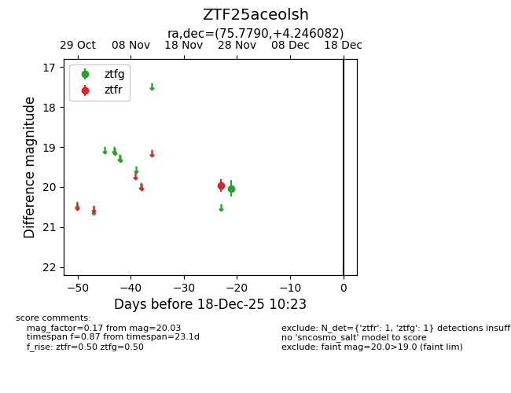
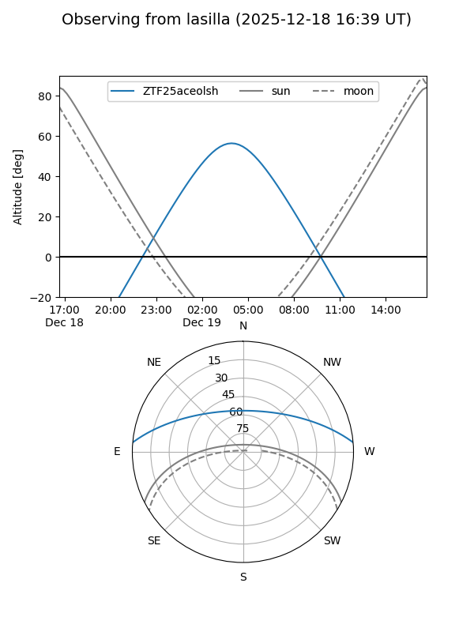
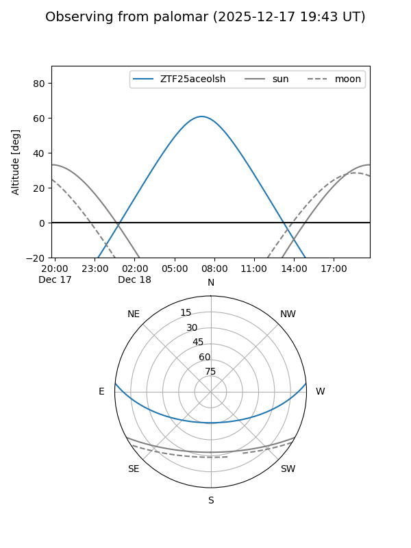

ZTF25aceolsh
Target ZTF25aceolsh at 2025-12-18 11:17
Aliases and brokers:
FINK: fink-portal.org/ZTF25aceolsh
Lasair: lasair-ztf.lsst.ac.uk/objects/ZTF25aceolsh
ALeRCE: alerce.online/object/ZTF25aceolsh
alt names
ZTF25aceolsh (ztf,fink_ztf)
Coordinates:
equatorial (ra, dec) = 75.7790,+4.24608
equatorial (HMS+DMS) = 05:03:06.96,+04:14:45.90
galactic (l, b) = (195.8468,-21.73328)
Photometry
last ztfg=20.03, ztfr=19.96
1 ztfg, 1 ztfr detections
Lightcurve

Visibility


Additional plots